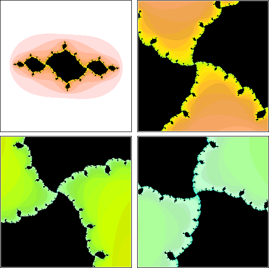

| If the iterates of z0 fail to satisfy the escape criterion, we assume z0 belongs to the filled-in Julia set Kc and paint black the pixel containing z0. |
| If the iterates of z0 do satisfy the escape criterion, we usually paint the pixel containing z0 with a color indicating how many iterations were needed to first get farther than 2 from the origin. |
| For example, |
| paint the pixel containing z0 white if z1 is farther than 2 from the origin. |
| Paint the pixel light to dark pink if a few more iterates are needed to get farther than 2 from the origin. |
| Paint the pixel orange to yellow if a few more iterates are needed to get farther than 2 from the origin. |
| Paint the pixel green to blue if a few more iterates are needed to get farther than 2 from the origin. |
| and so on. The successive magnifications - left to right, top to bottom - illustrate this coloring. |
|  |
Return to Julia sets.